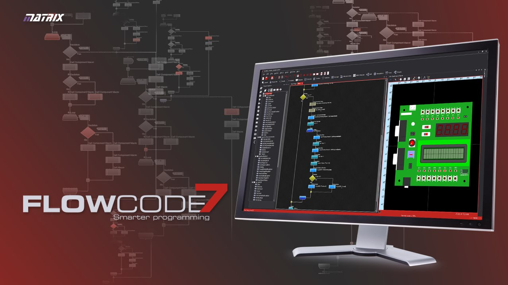

Pôle ITEC
Les 2 élèves d’ITEC ont travaillé sur la partie modélisation du pistolet infrarouge, avec la réflexion sur la forme, l’intégration du matériel et l’aspect mécanique du prototype.
IR Game est un projet réalisé dans le cadre de la spécialité SIN en STI2D, avec une approche transversale réunissant les différentes compétences du cursus. Le principe était de concevoir un système de jeu interactif autour d’un pistolet infrarouge, d’une cible mobile et d’un affichage sur panneau LED, afin de mettre en pratique l’électronique, la programmation, l’intégration et la partie mécanique.
Ce projet a été mené comme projet de spécialité SIN en STI2D, avec une logique de collaboration entre plusieurs profils. L’idée était de construire un système cohérent et concret, mêlant la partie numérique, la gestion des signaux, l’affichage et la conception mécanique.
L’équipe était composée de 3 élèves en SIN et 2 élèves en ITEC. Les élèves d’ITEC se chargeaient principalement de la modélisation et de la conception du pistolet infrarouge. Côté SIN, le travail portait sur la partie électronique, la programmation et le comportement global du système.
Les 2 élèves d’ITEC ont travaillé sur la partie modélisation du pistolet infrarouge, avec la réflexion sur la forme, l’intégration du matériel et l’aspect mécanique du prototype.
Les 3 élèves de SIN se sont réparti la partie numérique : affichage sur panneau LED, détection infrarouge et cible mobile. L’objectif était d’obtenir un ensemble capable de réagir au tir et d’afficher correctement les informations attendues.
J’ai travaillé avec un autre élève de SIN sur la partie affichage sur panneau LED. Le but était de rendre le système lisible, visible et exploitable pendant les essais, afin d’afficher les informations utiles liées au fonctionnement du projet.
Je me suis occupé seul de la partie infrarouge, avec une gestion basée sur une interruption matérielle INTB0. Cette partie était importante car elle permettait de détecter l’événement de tir et de déclencher la réaction du système de manière plus propre et réactive.
Mon travail consistait aussi à assurer la cohérence entre la détection infrarouge et le reste du projet. Un autre élève de SIN s’occupait du chariot mouvant pour la cible, ce qui permettait d’ajouter une dimension dynamique au système.

Ce projet m’a permis de mieux comprendre la logique de développement d’un système complet, depuis l’idée jusqu’aux essais. J’ai pu approfondir la partie gestion de signaux et réactivité système, tout en participant à une réalisation concrète avec plusieurs intervenants.
Il montre également ma capacité à prendre en charge une partie technique en autonomie, ici le système infrarouge, tout en collaborant avec d’autres élèves sur les éléments complémentaires comme l’affichage et la cible mobile.